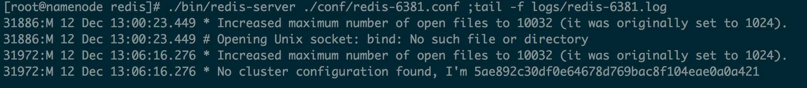
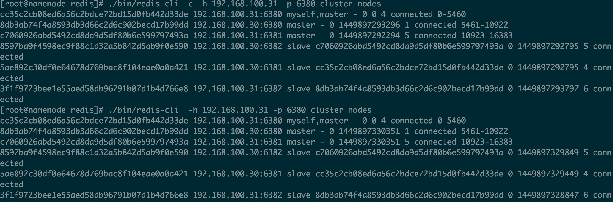

- 环境 使用两台centos服务器，每台机器上部署三个实例，集群为三个主节点三个从节点：
192.168.100.x0:6380
192.168.100.x0:6381
192.168.100.x0:6382
192.158.100.x1:6380
192.158.100.x1:6381
192.158.100.x1:6382
安装依赖
由于通过redis-trib.rb工具构建Redis Cluster，需要rudy环境，执行如下命令安装： yum -y install zlib ruby rubygems 安装ruby 的redis库： gem install redis
安装redis3.0
wget http://download.redis.io/releases/redis-3.0.0.tar.gz tar -zxvf redis-3.0.0.tar.gz mkdir redis cd redis-3.0.0 make PREFIX=/data/redis/redis make PREFIX=/data/redis/redis install 将集群工具复制到/data/redis/redis/bin下 cp /data/redis-3.0.0/src/redis-trib.rb ./bin/ 创建数据配置目录 mkdir -p /data/redis/{conf,data,logs}配置
在两台机器上配置如下：
cd /data/redis
cp /data/redis-3.0.0/redis.conf ./conf/redis-6380.conf
cp /data/redis-3.0.0/redis.conf ./conf/redis-6381.conf
cp /data/redis-3.0.0/redis.conf ./conf/redis-6382.conf
修改配置如下：
#基本配置
daemonize yes
pidfile /data/redis/data/redis-6380.pid
port 6380
bind 192.168.36.X1
unixsocket /data/redis/data/redis-6380.sock
unixsocketperm 700
timeout 300
loglevel verbose
logfile /data/redis/logs/redis-6380.log
databases 16
dbfilename dump-6380.rdb
dir /data/redisredis/data/
#aof持久化
appendonly yes
appendfilename appendonly-6380.aof
appendfsync everysec
no-appendfsync-on-rewrite yes
auto-aof-rewrite-percentage 80-100
auto-aof-rewrite-min-size 64mb
lua-time-limit 5000
#集群配置
cluster-enabled yes
cluster-config-file /data/redis/data/nodes-6380.conf
cluster-node-timeout 5000
每个实例配置都类似，只需修改一下对应的端口，IP地址，配置文件名即可
Rdis 集群由多个运行在集群模式下的Redis实例组成，实例的集群模式需要通过配置来开启，开启集群模式的实例将可以使用集群特有的功能和命令。让集群运行至少需要三个主节点。不过建议使用6个节点，三个为主节点，三个为从节点。
cluster-enabled：开启集群模式
cluster-conf-file:设定了保存节点配置文件的路径，默认为nodes.conf.节点配置文件无需人为修改。它由redis在启动的时候创建，并在需要的时候自动更新
cluster-node-timeout：集群间互相连接超时阔法值
启动服务
1.在两台机器上启动：
./bin/redis-server ./conf/redis-6380.conf ;tail -f logs/redis-6380.log ./bin/redis-server ./conf/redis-6381.conf ;tail -f logs/redis-6381.log ./bin/redis-server ./conf/redis-6382.conf ;tail -f logs/redis-6382.log启动后将看到如下日志：

每个节点都使用 ID 而不是 IP 或者端口号来记录其他节点， 因为 IP 地址和端口号都可能会改变， 而这个独一无二的标识符（identifier）则会在节点的整个生命周期中一直保持不变
2.集群配置
在每台机器上启动的redis服务都是相互独立，下面我们就使用redis-trib.rb工具构建Redis Cluster。
./bin/redis-trib.rb create --replicas 1 192.168.100.x1:6380 192.168.100.x1:6381 192.168.100.x1:6382 192.168.100.x2:6380 192.168.100.x2:6381 192.168.100.x2:6382
命令的意义如下：
给定 redis-trib.rb 程序的命令是 create ， 这表示我们希望创建一个新的集群。
选项 --replicas 1 表示我们希望为集群中的每个主节点创建一个从节点。
之后跟着的其他参数则是实例的地址列表， 我们希望程序使用这些地址所指示的实例来创建新集群。
简单来说， 以上命令的意思就是让 redis-trib 程序创建一个包含三个主节点和三个从节点的集群
启动日志：
[root@namenode redis]# ./bin/redis-trib.rb create --replicas 1 192.168.100.30:6380 192.168.100.30:6381 192.168.100.30:6382 192.168.100.31:6380 192.168.100.31:6381 192.168.100.31:6382
>>> Creating cluster
Connecting to node 192.168.100.30:6380: OK
Connecting to node 192.168.100.30:6381: OK
Connecting to node 192.168.100.30:6382: OK
Connecting to node 192.168.100.31:6380: OK
Connecting to node 192.168.100.31:6381: OK
Connecting to node 192.168.100.31:6382: OK
>>> Performing hash slots allocation on 6 nodes...
Using 3 masters:
192.168.100.31:6380
192.168.100.30:6380
192.168.100.31:6381
Adding replica 192.168.100.30:6381 to 192.168.100.31:6380
Adding replica 192.168.100.31:6382 to 192.168.100.30:6380
Adding replica 192.168.100.30:6382 to 192.168.100.31:6381
M: 8db3ab74f4a8593db3d66c2d6c902becd17b99dd 192.168.100.30:6380
slots:5461-10922 (5462 slots) master
S: 5ae892c30df0e64678d769bac8f104eae0a0a421 192.168.100.30:6381
replicates cc35c2cb08ed6a56c2bdce72bd15d0fb442d33de
S: 8597ba9f4598ec9f88c1d32a5b842d5ab9f0e590 192.168.100.30:6382
replicates c7060926abd5492cd8da9d5df80b6e599797493a
M: cc35c2cb08ed6a56c2bdce72bd15d0fb442d33de 192.168.100.31:6380
slots:0-5460 (5461 slots) master
M: c7060926abd5492cd8da9d5df80b6e599797493a 192.168.100.31:6381
slots:10923-16383 (5461 slots) master
S: 3f1f9723bee1e55aed58db96791b07d1b4d766e8 192.168.100.31:6382
replicates 8db3ab74f4a8593db3d66c2d6c902becd17b99dd
Can I set the above configuration? (type 'yes' to accept): yes
>>> Nodes configuration updated
>>> Assign a different config epoch to each node
>>> Sending CLUSTER MEET messages to join the cluster
Waiting for the cluster to join...
>>> Performing Cluster Check (using node 192.168.100.30:6380)
M: 8db3ab74f4a8593db3d66c2d6c902becd17b99dd 192.168.100.30:6380
slots:5461-10922 (5462 slots) master
M: 5ae892c30df0e64678d769bac8f104eae0a0a421 192.168.100.30:6381
slots: (0 slots) master
replicates cc35c2cb08ed6a56c2bdce72bd15d0fb442d33de
M: 8597ba9f4598ec9f88c1d32a5b842d5ab9f0e590 192.168.100.30:6382
slots: (0 slots) master
replicates c7060926abd5492cd8da9d5df80b6e599797493a
M: cc35c2cb08ed6a56c2bdce72bd15d0fb442d33de 192.168.100.31:6380
slots:0-5460 (5461 slots) master
M: c7060926abd5492cd8da9d5df80b6e599797493a 192.168.100.31:6381
slots:10923-16383 (5461 slots) master
M: 3f1f9723bee1e55aed58db96791b07d1b4d766e8 192.168.100.31:6382
slots: (0 slots) master
replicates 8db3ab74f4a8593db3d66c2d6c902becd17b99dd
[OK] All nodes agree about slots configuration.
>>> Check for open slots...
>>> Check slots coverage...
[OK] All 16384 slots covered.
[root@namenode redis]#
[root@namenode redis]# ./bin/redis-cli -packet_write_wait: Connection to 192.168.100.30: Broken pipe
haosudeMacBook-Pro:~ hao.su$ ssh root@192.168.100.30
Last login: Sat Dec 12 13:04:09 2015 from 192.168.100.248
冲启动日志中可以看出有6个节点，3个主节点为：
192.168.100.31:6380
192.168.100.30:6380
192.168.100.31:6381
每个主节点对应一个从节点：
Adding replica 192.168.100.30:6381 to 192.168.100.31:6380
Adding replica 192.168.100.31:6382 to 192.168.100.30:6380
Adding replica 192.168.100.30:6382 to 192.168.100.31:6381
slots 划分：
192.168.100.30:6380 5461-10922
192.168.100.31:6380 0-5460
192.168.100.31:6381 10923-16383
redis-trib.rb 使用：
Usage: redis-trib <command> <options> <arguments ...>
check host:port
call host:port command arg arg .. arg
del-node host:port node_id
reshard host:port
--yes
--from <arg>
--slots <arg>
--to <arg>
fix host:port
add-node new_host:new_port existing_host:existing_port
--master-id <arg>
--slave
help (show this help)
import host:port
--from <arg>
set-timeout host:port milliseconds
create host1:port1 ... hostN:portN
--replicas <arg>
参数说明：
call：执行redis命令
create：创建一个新的集群。host1:port1 ... hostN:portN指定了用于构建Redis Cluster的所有redis实例，节点角色由顺序决定,先master之后是slave。而--replicas 则指定了为Redis Cluster中的每个Master节点配备几个Slave节点。
add-node 将一个节点添加到集群里面， 第一个是新节点ip:port, 第二个是任意一个已存在节点ip:port，--master-id
reshard：重新分片
check：查看集群信息
del-node：移除一个节点
对于客户端redis-cli 要访问集群，在启动的时候需要添加一个-c参数，如查看集群所有节点

进入cli：
./bin/redis-cli -c -h 192.168.100.30 -p 6381